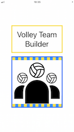

Volley Team Builder
Description
VTB permet de construire des équipes de volley bonne ambiance.
Dans le cadre d'une séance de volley loisir, les niveaux des joueurs peuvent être très différents et il faut faire des équipes homogènes en terme de niveau sinon certaines équipes mettent la pâtée aux autres. Et si on peut mettre les copains dans la même équipe, c'est encore mieux.
Une fois le niveau et les affinités de chaque joueur renseignés, VTB va générer des équipes équilibrées en respectant un maximum de voeux.
Par exemple, si Micheline est débutante et Raoul super fort, et si Marie et Luc veulent jouer ensemble, et si Bernadette aime bien courir partout mais préfèrerait éviter d'être avec Brandon parce qu'il lui pique ses balles, et si Conan s'est blessé à force de tourner sa roue et est donc pas au max sur cette séance, et si Aurore est plutôt douée en défense donc il lui faut un attaquant comme Yusuke dans son équipe, et si Nico est parti en vacances faire de la randonnée, et si et si et si, ho la la c'est compliqué de faire des équipes équilibrées en essayant de faire plaisir à tout le monde !!
Dans ce cas-là, on demande à VTB de faire les équipes, il essaie de faire au mieux pour satisfaire tout le monde tout en faisant des équipes à peu près équilibrées. Et l'avantage c'est que comme ça si les gens sont pas contents des équipes, c'est la faute de personne.

Info sur les onglets
ACCUEIL
- A quoi sert Volley Team Builder ?
VTB sert à faire des équipes de volley bonne ambiance. Dans le cadre d'une séance loisir, les niveaux des joueurs peuvent être très différents et l'encadrant de la séance (appelons-le Luc) doit faire des équipes homogènes en terme de niveau sinon certaines équipes mettent la patée à d'autres. Et si il arrive à mettre des gens qui s'entendent bien dans la même équipe, c'est encore mieux. VTB construit les équipes en fonction de critères de niveau et d'affinités.
- Comment ça marche ?
VTB construit X solutions équilibrées et sélectionne les N meilleures solutions. Pour construire une solution, VTB choisit un joueur aléatoirement et le place dans l'équipe qui donne la solution partielle la plus équilibrée possible (minimisation de la distance), et recommence jusqu'à épuisement des joueurs (algo glouton miam miam). Le score d'une équipe est la moyenne du niveau de ses joueurs (avec un coef de (6+nbJoueurs)/12). Le bonus d'une équipe est le nombre de souhaits réalisés (affinités - taille de l'équipe) pour tous les joueurs de l'équipe. Le bonus d'une solution est le plus petit bonus par équipe. Le bonus total d'une solution est le nombre de souhaits réalisés (affinités - taille de l'équipe) pour tous les joueurs. Une solution est meilleure qu'une autre quand son bonus est plus grand, et en cas d'égalité si son bonus total est plus grand.
JOUEURS
- Jour :
Le jour courant apparait en haut de la liste des joueurs et si on appuie sur "valider", les joueurs inscrits à cette séance deviendront automatiquement présents tandis que les autres joueurs deviendront automatiquement absents. Les présents sont en début de liste, les absents en fin de liste. On peut également changer la présence/absence d'un joueur en swipant vers la gauche et en choisissant 0/1.
- Joueur absent/blessé :
En swipant vers la gauche dans la liste des joueurs, on peut dire qu'un joueur est bless√© (ü§ï) ou absent (0/1). Si il est bless√©, il apparait en gris clair dans la liste, son score sera abaiss√© de 1 et sa pr√©f√©rence en taille d'√©quipe sera r√©duite (sans toucher √† sa fiche). Une fois gu√©ri, il suffit de supprimer le flag bless√©. On peut √©galement supprimer le joueur de l'application en cliquant sur la croix rouge (X).
- Niveau :
Pour configurer le niveau d'un joueur. C'est un niveau intrinseque qui servira pour toutes les seances. Si jamais Raoul joue le lundi avec des bons joueurs et le jeudi avec des moins bons, il garde le même niveau, simplement le niveau moyen des joueurs du lundi sera supérieur au niveau moyen des joueurs du jeudi. Ce niveau est utilisé pour répartir les joueurs dans les équipes afin d'obtenir des équipes équilibrées.
- Def/Att :
Pour configurer le profil d'un joueur, plutôt un défenseur, un joueur complet ou un attaquant. Ca sert pour le paramètre répartition def/attaque des réglages.
- Timide/Normal/Bavard :
Pour préciser si un joueur est plutôt bavard ou silencieux sur le terrain. Ca sert pour le paramètre répartition tim/bavards des réglages.
- Affinités :
Pour préciser les affinités d'un joueur avec les autres. Ca peut aller de -2 à +2. En gros ce sont des souhaits (j'aimerais être avec Michel / j'aimerais éviter d'être avec Michel), et VTB proposera en priorité les solutions réalisant le plus grand nombre de souhaits. Mais il ne pourra pas forcément satisfaire tout le monde (en général on veut tous jouer avec les mêmes et éviter les mêmes, ha ha). Les affinités fortes peuvent devenir des contraintes obligatoires lors de la construction de l'équipe si le paramètre préférences joueurs est activé dans les réglages.
- Taille équipe :
Pour préciser la préférence d'un joueur pour les petites ou les grosses équipes. Est-ce qu'il aime courir ou pas trop ? Si un joueur préfère les petites équipes et qu'il est effectivement dans une équipe avec moins de joueurs (car on n'est pas toujours le nombre exact), la solution aura un bonus de +1 ou +2. Si au contraire ce joueur est dans une équipe avec plus de joueurs, la solution aura un bonus de -1 ou -2. Et l'inverse si il préfère les grosses équipes (bonus positif si grosse équipe, négatif si petite équipe). Si le joueur a un niveau un peu trop faible, il ne pourra pas demander une petite équipe. Les demandes fortes peuvent devenir des contraintes obligatoires lors de la construction de l'équipe si le paramètre préférences équipe est activé dans les réglages.
SOLUTIONS
- Les solutions sont classées bizarrement non ?
Les meilleures solutions sont conservées. Les trois critères pour savoir si une solution est meilleure qu'une autre sont (dans cet ordre) : meilleur bonus, meilleur bonus total, meilleure distance. Mais comme à la base le but c'est d'avoir des équipes équilibrées, à l'affichage je réordonne les solutions conservées suivant les critères suivants (dans cet ordre) : meilleure distance, meilleur bonus, meilleur bonus total. A vous de voir si vous voulez privilégier des équipes équilibrées (distance la plus petite) ou des équipes où les gens sont avec leurs copains (bonus le plus grand).
- C'est quoi tous ces petits chiffres sur la ligne de l'équipe (cf. capture d'écran solution) ?
Les deux premiers chiffres, ce sont les bonus (affinités / taille de l'équipe). Ensuite c'est le niveau moyen de l'équipe après application du coef de (6+nbJoueurs)/12). Entre parenthèses, c'est le niveau moyen de l'équipe avant application du coef, avec le détail niveau moyen défense et niveau moyen attaque.
MATCHS
- Générer les matchs :
En fonction du nombre de terrains, ça va générer les matchs (mode championnat, toutes les équipes se rencontrent), en faisant attention de ne pas faire attendre trop longtemps une même équipe dans le cas où il n'y a pas assez de terrains pour que tout le monde joue en même temps. Ca fait aussi quelques choix en random donc ça peut arriver qu'on vous demande de cliquer plusieurs fois, faut pas s'inquiéter et obéir (aie confiance... crois en moi...). On peut ensuite cliquer sur un match pour rentrer le résultat.
- Voir le classement :
Affiche le classement en fonction des scores rentrés. Il peut y avoir des matchs nuls (c'est rare mais des fois y a des tournois au temps donc pourquoi pas).
REGLAGES
- Même nb joueurs :
Sert pas à grand chose en vrai. Si désactivé on peut avec 7 joueurs et 2 équipes par exemple, avoir une équipe de 2 et une équipe de 5. Si activé, on aura forcément une équipe de 3 et une équipe de 4.
- Même nb filles :
Sert à répartir les filles dans les équipes, et les garçons aussi du coup. A avoir des équipes mixtes quoi.
- Répartition tim/bavards :
Sert à éviter les équipes trop silencieuses. Quand on a que des timides qui parlent pas dans une équipe, en général ça fonctionne moins bien. C'est lié au paramètre timide/normal/bavard de la fiche joueur (qui vaut 0, 1 ou 2). Si on a une équipe avec une moyenne en-dessous de 0.5, la solution va à la poubelle.
- Répartition def/attaque :
Sert à répartir les profils attaquants et les profils défenseurs. Pour éviter d'avoir une équipe avec beaucoup de fond de jeu mais aucun attaquant, ou l'inverse. Si jamais une équipe a un niveau moyen de défense en-dessous de 0.85 du niveau moyen de défense de tous les participants, la solution va à la poubelle. Pareil pour l'attaque. C'est lié aux paramètres niveau et def/attaque de la fiche joueur.
- Préférences joueurs :
Si jamais Micheline adore Raoul, qu'elle l'a mis en +2 dans ses préférences, et que cette option est activée, alors ils seront forcément dans la même équipe. Et évidemment, si elle le déteste et qu'elle l'a mis en -2 dans ses préférences, alors ils seront forcément dans des équipes différentes. Attention, ça peut vite limiter les solutions possibles ! En particulier si Raoul n'est pas du même avis et a configuré l'inverse dans ses affinités. Les équipes risquent d'être moins équilibrées vu qu'on force la main à l'algo. C'est lié au tableau affinités de la fiche joueur.
- Alléger/Supprimer les préférences joueurs :
Si tout le monde a mis des contraintes fortes et que du coup il n'y a plus aucune solution qui sort, on a deux possibilités : désactiver l'option préférences joueurs, ou cliquer sur un de ces deux boutons. Alléger les préférences va passer toutes les affinités +2 en +1 et -2 en -1. Supprimer les préférences va supprimer toutes les affinités de tous les joueurs. Attention, ces deux boutons vont modifier les fiches joueurs !! C'est lié au tableau affinités de la fiche joueur.
- Préférences équipe :
Si jamais Marie a passé sa journée à coder et a vraiment besoin de se défouler, elle peut choisir "veut une petite équipe" et si cette option est activée, alors elle sera forcément dans une des équipes avec le moins de joueurs. Et l'inverse avec les grosses équipes aussi évidemment. Attention, ça peut vite limiter les solutions possibles ! Les équipes risquent d'être moins équilibrées vu qu'on force la main à l'algo. C'est lié au tableau taille équipe de la fiche joueur.
- Alléger/Supprimer les préférences équipe :
Si tout le monde a mis des contraintes fortes et que du coup il n'y a plus aucune solution qui sort, on a deux possibilités : désactiver l'option préférences équipe, ou cliquer sur un de ces deux boutons. Alléger va passer tous les réglages "veut une petite équipe" en "préfère une petite équipe" et les "veut une grosse équipe" en "préfère une grosse équipe". Supprimer va supprimer tous les réglages de taille d'équipe de tous les joueurs. Attention, ces deux boutons vont modifier les fiches joueurs !! C'est lié au paramètre taille équipe de la fiche joueur.
- Nb solutions testées :
C'est le nombre de solutions testées (X dans le blabla du début). Les solutions sont toutes par construction relativement équilibrées car on place les joueurs un par un dans les équipes, et qu'on place toujours le joueur dans l'équipe donnant la meilleure répartition des niveaux. En fait dans la construction on oriente un peu le choix de l'équipe pour avoir des solutions viables à la fin (en cas de contraintes fortes ou de répartitions des filles/garçons par exemple). Vaut 100 par défaut.
- Nb solutions affichées :
C'est le nombre de solutions gardées (N dans le paragraphe du début). On garde les solutions qui ne pénalisent aucune équipe et réalisant le maximum de souhaits. A l'affichage, on trie les solutions pour les afficher de la plus équilibrée à la moins équilibrée, en précisant le bonus et le bonus total de cette solution (bonus affinités et bonus taille de l'équipe). Vaut 10 par défaut.
Divers
- Ca marche que pour le volley ?
Evidemment, les autres sports c'est pour les nazes. Sauf le ping-pong et le bad.
- Iphone uniquement ?
Oui.
- Y a moyen de récupérer les configs des joueurs d'un autre telephone ?
C'était cool de coder l'algo, le reste ça me fait moins envie. Donc non, désolée. En plus avec les données personnelles, mon pote Luc m'a dit qu'il fallait faire attention. Il a écrit un blabla géant pour le RGPD, cf. ci-dessous.
- VTB trouve pas de solution, c'est normal ?
T'as demandé 8 équipes avec 2 joueurs banane ? Ou alors y a trop de contraintes incompatibles dans les préférences des joueurs présents. Et même si il existe une solution possible qui respecte toutes les préférences, il faut encore que cette solution remplisse les autres contraintes (équipes mixtes, répartition def/attaque). Dans ce cas, le mieux c'est d'aller dans les réglages et de désactiver \"préférences joueurs\" et/ou \"préférences équipe\" ou allèger/suppprimer les préférences.
- Mais y a plein de bugs dans ce truc, c'est abusé !
Mais nannn, ce sont des trous fonctionnels. Vous pouvez envoyer un mail à volleyteambuilder@free.fr, si je suis pas au boulot, au volley, avec les enfants ou devant la télé, c'est sûr je vous réponds !
- C'est politiquement correct de mettre des notes aux gens et de dire que t'aimes pas untel ou untel ?
Oui bon, c'est pas pire qu'un site de rencontres hein.
Gestion des données personnelles
Le concepteur de l'application VTB attache une grande importance à la protection et confidentialité de la vie privée plus particulièrement des données à caractère personnel. Dans ce cadre, l'application VTB met en oeuvre des dispositions particulières permettant à chaque utilisateur de l'application d'être en conformité avec le règlement européen de protection des données personnelles (RGPD), toutefois la responsabilité effective de cette conformité doit être assurée par ce dernier. Il doit en particulier :
- S'assurer à chaque saison sportive (chaque année) du consentement explicite des participants à la collecte des données personnelles et en garder trace.
- Les informer de l'unique finalité d'usage qui est : la composition d'équipes de volley-ball équilibrées pour assurer un jeu agréable et équitable
- Permettre aux participants d'exercer leur droit d'accès et de rectification des données collectées ainsi que la portabilité des informations.
- Supprimer les données personnelles des participants au bout de 12 mois quand ceux-ci n'ont pas renouvelés explicitement leur consentement.
- S'engager à n'utiliser les données pour aucun autre traitement que celui de la finalité expresse de constitution d'équipes sportives équilibrées.
- S'engager à ne pas transmettre à des tiers ces données collectées.
Au delà de la responsabilité et des engagements de l'utilisateur de l'application, le concepteur de VTB partage en toute transparence les informations suivantes :
- QUEL TYPE DE DONNÉES VTB COLLECTE-T-ELLE AUPRÈS DES JOUEURS PARTICIPANTS ?
- Des données d'identification : nom, prénom, surnom (au choix de l'utilisateur)
- Des données concernant les caractéristiques et les préférences individuelles de jeu : estimation du niveau technique dans les différents compartiments de jeu, préférences du nombre de joueurs par équipe
- Des donneés relatives à l'état de forme du moment de chaque joueur sous la forme d'un malus en cas de blessure
- Des données relatives à l'affinité et à la complémentarité de jeu entre les participants
- Des données relatives à la participation du joueur à des séances de jeu
- DE QUELLE FAÇON VTB UTILISE-T-ELLE LES DONNÉES DES JOUEURS ?
- La pratique du volley ball loisir dans les meilleures conditions requiert que des équipes homogènes soient mises en opposition. Les encadrants des séances sont confrontés à la problématique de répartir le mieux possible les participants dans les équipes. VTB apporte une aide précieuse dans cette tâche d'optimisation combinatoire en calculant puis en proposant à l'utilisateur encadrant des équipes pré-constituées répondant aux critères optimisés.
- La finalité principale et unique est donc la constitution d'équipes de volley équilibrées afin de garantir des séances de volley où les joueurs sont répartis équitablement dans les équipes pour procurer un niveau de jeu homogène et agréable aux participants.
- COMMENT LES JOUEURS PARTICIPANTS PEUVENT GÉRER LA COLLECTE ET L’UTILISATION QUI SONT FAITES DE LEURS DONNÉES ?
- La collecte des informations décrites au paragraphe 1 est effectuée sous l'unique responsabilité de l'utilisateur de l'application VTB.
- Ces données sont saisies dans l'application VTB via des formulaires permettant d’alimenter une base d'information joueurs, localisée uniquement sur le terminal.
- Il est à noter que l'application propose toutes les fonctionnalités permettant d'exercer le droit d'accès de modification et de suppression des données collectées. L'exercice de droit doit être formulé par le joueur auprès de l'encadrant utilisateur de l'application VTB.
- DE QUELLE FAÇON VTB ASSURE-T-ELLE LA SÉCURITÉ DE VOS DONNÉES ?
- La sécurité des données collectées sont assurées par les mécanismes de sécurité du terminal et du système d'exploitation mobile.
- Les données sont uniquement stockées localement sur le terminal mobile et ne sont pas dupliquées sur un cloud.
- La non divulgation des données est sous la responsabilité de l'utilisateur mais il est à noter que VTB ne propose pas de mécanisme d'export des données afin de garantir la confidentialité et d’empêcher la transmission automatisée des données.
Icone fait par Ohlamalie à partir de www.flaticon.com